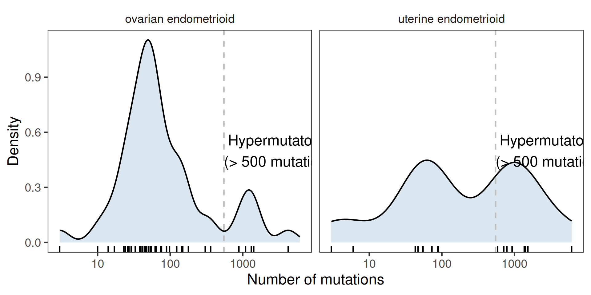
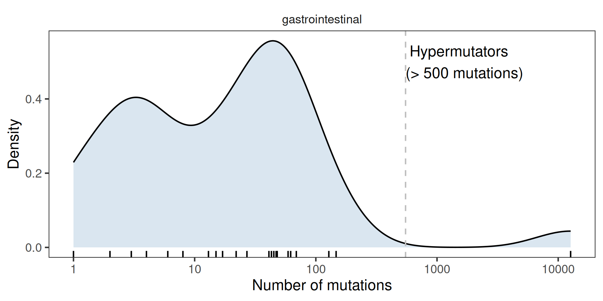
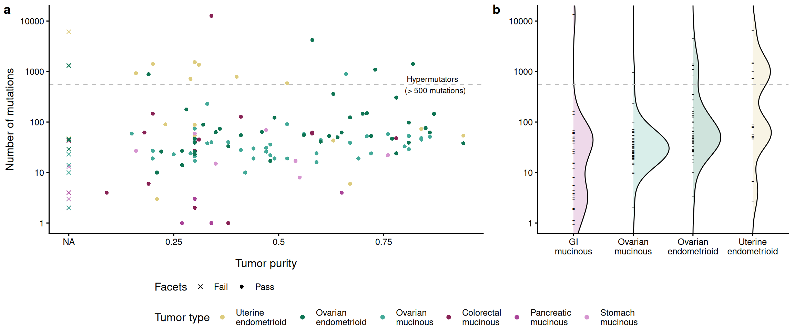
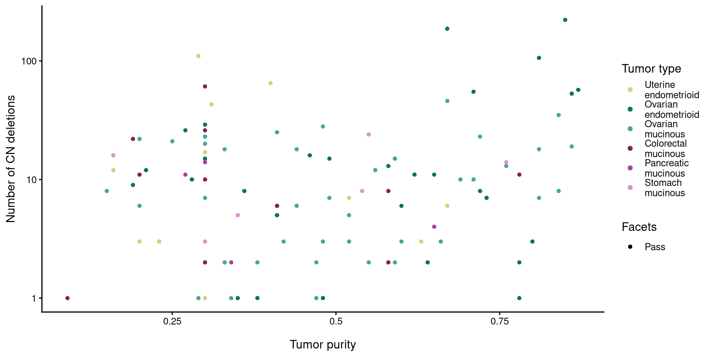

Last updated: 2026-08-31
Checks: 6 1
Knit directory: repo/analysis/
This reproducible R Markdown analysis was created with workflowr (version 1.7.2). The Checks tab describes the reproducibility checks that were applied when the results were created. The Past versions tab lists the development history.
Great! Since the R Markdown file has been committed to the Git repository, you know the exact version of the code that produced these results.
Great job! The global environment was empty. Objects defined in the global environment can affect the analysis in your R Markdown file in unknown ways. For reproduciblity it’s best to always run the code in an empty environment.
The command set.seed(12345) was run prior to running the
code in the R Markdown file. Setting a seed ensures that any results
that rely on randomness, e.g. subsampling or permutations, are
reproducible.
Nice! There were no cached chunks for this analysis, so you can be confident that you successfully produced the results during this run.
Great job! Using relative paths to the files within your workflowr project makes it easier to run your code on other machines.
Great! You are using Git for version control. Tracking code development and connecting the code version to the results is critical for reproducibility.
The results in this page were generated with repository version 9e09a1a. See the Past versions tab to see a history of the changes made to the R Markdown and HTML files.
Note that you need to be careful to ensure that all relevant files for
the analysis have been committed to Git prior to generating the results
(you can use wflow_publish or
wflow_git_commit). workflowr only checks the R Markdown
file, but you know if there are other scripts or data files that it
depends on. Below is the status of the Git repository when the results
were generated:
Ignored files:
Ignored: .Rhistory
Ignored: .claude/
Ignored: .uvr/
Ignored: .vscode/
Ignored: REPRODUCIBILITY_PLAN.html
Ignored: Rplots.pdf
Ignored: _targets/
Ignored: bam_clean/
Ignored: baseline_review/
Ignored: cards/dashboard.html
Ignored: code/archive/
Ignored: data/crosswalk_private.csv
Ignored: data/ega_file_listing.csv
Ignored: extdata/bVals.rds
Ignored: extdata/bVals081820.rds
Ignored: extdata/mutation_reports/
Ignored: hallberg2025.base/
Ignored: hallberg2025.meth.data/data-raw/.Rhistory
Ignored: hallberg2025.meth.data/data-raw/_targets/
Ignored: hallberg2025.meth.data/data-raw/_targets_change002_delta/
Ignored: hallberg2025.meth.data/data-raw/beta_concordance_batch1.png
Ignored: hallberg2025.meth.data/data-raw/logs/
Ignored: hallberg2025.meth.data/data-raw/slurm-34256940.out
Ignored: hallberg2025.meth.data/data-raw/slurm-34683691.out
Ignored: hallberg2025.seq.data/data-raw/.Renviron
Ignored: hallberg2025.seq.data/data-raw/Rplots.pdf
Ignored: hallberg2025.seq.data/data-raw/facets_metrics/
Ignored: hallberg2025.seq.data/data-raw/facets_metrics_wes/
Ignored: hallberg2025.seq.data/data-raw/logs/
Ignored: hallberg2025.seq.data/data-raw/reproduction_output/
Ignored: hallberg2025.seq.data/data-raw/slurm-34294594.out
Ignored: hallberg2025.seq.data/data-raw/slurm-34352530.out
Ignored: hallberg2025.seq.data/data-raw/slurm-34491256.out
Ignored: hallberg2025.seq.data/data-raw/slurm-34523320.out
Ignored: hallberg2025.seq.data/data-raw/slurm-34537166.out
Ignored: hallberg2025.seq.data/data-raw/slurm-w2-verify-34363920.out
Ignored: hallberg2025.seq.data/data-raw/slurm-w3-verify-34368104.out
Ignored: hallberg2025.seq.data/data-raw/slurm-w3-verify-34408517.out
Ignored: hallberg2025.seq.data/data-raw/snp_matrix/
Ignored: hallberg2025.seq.data/data-raw/snp_matrix_wes/
Ignored: hallberg2025.seq.data/data-raw/tools/snplocschr1
Ignored: hallberg2025.seq.data/data-raw/tools/snplocschr10
Ignored: hallberg2025.seq.data/data-raw/tools/snplocschr11
Ignored: hallberg2025.seq.data/data-raw/tools/snplocschr12
Ignored: hallberg2025.seq.data/data-raw/tools/snplocschr13
Ignored: hallberg2025.seq.data/data-raw/tools/snplocschr14
Ignored: hallberg2025.seq.data/data-raw/tools/snplocschr15
Ignored: hallberg2025.seq.data/data-raw/tools/snplocschr16
Ignored: hallberg2025.seq.data/data-raw/tools/snplocschr17
Ignored: hallberg2025.seq.data/data-raw/tools/snplocschr18
Ignored: hallberg2025.seq.data/data-raw/tools/snplocschr19
Ignored: hallberg2025.seq.data/data-raw/tools/snplocschr2
Ignored: hallberg2025.seq.data/data-raw/tools/snplocschr20
Ignored: hallberg2025.seq.data/data-raw/tools/snplocschr21
Ignored: hallberg2025.seq.data/data-raw/tools/snplocschr22
Ignored: hallberg2025.seq.data/data-raw/tools/snplocschr3
Ignored: hallberg2025.seq.data/data-raw/tools/snplocschr4
Ignored: hallberg2025.seq.data/data-raw/tools/snplocschr5
Ignored: hallberg2025.seq.data/data-raw/tools/snplocschr6
Ignored: hallberg2025.seq.data/data-raw/tools/snplocschr7
Ignored: hallberg2025.seq.data/data-raw/tools/snplocschr8
Ignored: hallberg2025.seq.data/data-raw/tools/snplocschr9
Ignored: hallberg2025.seq.data/data-raw/tools/snplocschrX
Ignored: hallberg2025.seq.data/data-raw/tools/snplocschrY
Ignored: hallberg2025.seq.data/data-raw/tools/zenodo-deposit-draft/
Ignored: hallberg2025.seq.data/data-raw/trellis_output/
Ignored: hallberg2025.seq.data/tests/testthat/_snaps/
Ignored: hallberg2025/
Ignored: inst/
Ignored: logs/
Ignored: manuscript/audit/
Ignored: manuscript/composite-1.eps
Ignored: manuscript/data_quality.html
Ignored: manuscript/hallberg2025.aux
Ignored: manuscript/hallberg2025.bbl
Ignored: manuscript/hallberg2025.blg
Ignored: manuscript/hallberg2025.log
Ignored: manuscript/supplemental.aux
Ignored: manuscript/supplemental.log
Ignored: manuscript/supplemental.pdf
Ignored: manuscript/testing/
Ignored: manuscript/~/
Ignored: output/01-coverage_stats.rmd/
Ignored: output/02-mutations.rmd/
Ignored: output/03-mutations.rmd/
Ignored: output/04-mutations.rmd/
Ignored: output/05-data_integration.rmd/
Ignored: output/07-figure5.rmd/stats.rds
Ignored: output/08-figure5.rmd/
Ignored: output/ext-figure9.Rmd/
Ignored: output/ext-figures/ext-figure9.Rmd/proportion_methylated.rds
Ignored: output/ext-figures/ext-figure9.Rmd/wilcox_stats.csv
Ignored: output/ext-figures/mutation_prevalence.rmd/
Ignored: output/facets-trellis/
Ignored: output/facets/
Ignored: output/figure6_jhu-heatmap.Rmd/
Ignored: output/figure6_tcga-heatmap.Rmd/
Ignored: output/gene_pathway.rmd/
Ignored: output/methylation.Rmd/
Ignored: output/mutations.html
Ignored: output/mutations.rds
Ignored: output/pcs.Rmd/
Ignored: output/pgdx_reports.rmd/
Ignored: output/read_length.rmd/
Ignored: output/temp.tar.gz
Ignored: output/temp/
Ignored: public/
Untracked files:
Untracked: manuscript/submitted/
Note that any generated files, e.g. HTML, png, CSS, etc., are not included in this status report because it is ok for generated content to have uncommitted changes.
These are the previous versions of the repository in which changes were
made to the R Markdown (analysis/ext-figure1.Rmd) and HTML
(docs/ext-figure1.html) files. If you’ve configured a
remote Git repository (see ?wflow_git_remote), click on the
hyperlinks in the table below to view the files as they were in that
past version.
| File | Version | Author | Date | Message |
|---|---|---|---|---|
| Rmd | 046240e | rscharpf | 2026-08-03 | MAN-05: repoint _targets.R and analysis/manuscript Rmds at renamed packages |
| html | 21ba89c | rscharpf | 2026-07-31 | GIT-03: untrack reproducible docs/ and output/ generated artifacts |
| Rmd | 526466e | rscharpf | 2026-07-31 | Fix case-only path mismatch in ext-figure1.Rmd: table_s4/s5.rmd -> .Rmd |
| Rmd | 29f8d56 | rscharpf | 2026-07-03 | Rename OvarianSubtypeExperimentData → OsSeqExpData |
| html | 0bc1639 | rscharpf | 2026-07-01 | Update docs, OvarianSubtypeExperimentData accessors, and artifact baseline (prettyNum formatting fix for table_S6/S8) |
| Rmd | 33b8d70 | rscharpf | 2026-07-01 | Load FACETS data from OvarianSubtypeExperimentData; remove output/ path dependencies in ext-figure1, table_s6-s9 |
| html | 0476813 | rscharpf | 2026-06-30 | Rebuild manuscript PDF and analysis HTMLs with corrected mutation spectra |
| html | 0b0955c | rscharpf | 2026-06-29 | Fix case-sensitive paths: Rmd→Rmd, rmd→Rmd in _targets.R, ext-figure9, supplemental.tex; regenerate affected HTML pages |
| Rmd | 00cb585 | rscharpf | 2026-06-29 | wflow_build: regenerate analysis/ HTML and fix ext-figure2 |
| html | 00cb585 | rscharpf | 2026-06-29 | wflow_build: regenerate analysis/ HTML and fix ext-figure2 |
| Rmd | 4c62039 | rscharpf | 2026-06-28 | Phase 6: migrate 05-data_integration.rmd outputs to targets pipeline |
| Rmd | f99cf03 | rscharpf | 2026-06-24 | Fix ext-figure1.Rmd: use correct WES/WGS mutation tables (s4/s5 not s3/s4) |
| html | f99cf03 | rscharpf | 2026-06-24 | Fix ext-figure1.Rmd: use correct WES/WGS mutation tables (s4/s5 not s3/s4) |
| html | 3c1f9fe | rscharpf | 2026-06-24 | Add wflow_build and verify_artifacts to CI; fix public release for ext-figure1 |
| Rmd | 471825e | rscharpf | 2026-06-24 | Sanitize FACETS output for public release; simplify 6 restricted Rmds |
| Rmd | a60c552 | rscharpf | 2026-06-23 | Strip private identifiers from published data objects; update analysis Rmds |
| Rmd | f28db88 | rscharpf | 2025-06-03 | Update figures |
| html | f28db88 | rscharpf | 2025-06-03 | Update figures |
| Rmd | 9764302 | Alice Eastman | 2025-03-06 | endometrial>enedometrioid terminology |
| Rmd | 7842781 | Shashikant Koul | 2024-12-23 | Note cor between facets tumor purity and # of mut |
| html | 7842781 | Shashikant Koul | 2024-12-23 | Note cor between facets tumor purity and # of mut |
| Rmd | 7a0bbf2 | rscharpf | 2024-11-13 | Updated Supplemental Fig1 |
| html | 7a0bbf2 | rscharpf | 2024-11-13 | Updated Supplemental Fig1 |
| html | afcfbab | rscharpf | 2024-08-30 | Merge branch ‘main’ of github.com:cancer-genomics/ovarian_wflow |
| html | 05caea1 | rscharpf | 2024-08-30 | Update html and figures |
| html | fd36601 | Shashikant Koul | 2024-08-20 | Rebuild ext-figure1.Rmd to update supp fig 1 |
| Rmd | cc96881 | Shashikant Koul | 2024-08-20 | Add pancreatic cases under GI label for supp fig 1 |
| html | fea052d | rscharpf | 2024-08-18 | Updates for latest ovarian.subtypes R package |
| html | b641e52 | rscharpf | 2024-08-18 | Update renv environment. |
| html | 4a850fc | Shashikant Koul | 2024-07-17 | Rebuild and publish |
| html | 79ddb57 | Shashikant Koul | 2024-07-02 | Rebuild docs |
| html | 6bc108c | rscharpf | 2024-06-08 | Update html for ext data fig 1 |
| Rmd | 7c8d072 | rscharpf | 2024-06-08 | Update code for ext data fig. 1 |
| Rmd | 0b03d0c | rscharpf | 2024-06-03 | Updates to Fig 6 |
| html | 423c880 | rscharpf | 2024-05-26 | Update COI and add renv info |
| html | 825bdcc | rscharpf | 2024-05-26 | Update workflowr analyses |
| Rmd | 222b943 | Shashikant Koul | 2024-03-28 | Modify supp fig 1, update manuscript |
| Rmd | 63f749e | Shashikant Koul | 2024-03-25 | Add purity=NA data to num of mut vs purity supp fig |
| Rmd | 9e29f67 | Shashikant Koul | 2024-03-25 | Add num of mut vs purity figure |
| Rmd | 688b811 | Shashikant Koul | 2024-03-25 | Add tumor purity and gi dist of mutations supp figures |
| html | bf38e1d | rscharpf | 2024-01-02 | Update html docs and figure pdfs |
| html | 3fc61f7 | rscharpf | 2023-12-22 | Build site. |
| Rmd | a29d1a1 | rscharpf | 2023-12-22 | wflow_publish("analysis/ext-figure1.Rmd") |
| Rmd | fd5cd41 | rscharpf | 2023-11-26 | updates |
| html | fd5cd41 | rscharpf | 2023-11-26 | updates |
| Rmd | 63d8cf9 | rscharpf | 2023-11-26 | Add ovarian.subtypes package. Update analysis rmarkdowns |
| html | 63d8cf9 | rscharpf | 2023-11-26 | Add ovarian.subtypes package. Update analysis rmarkdowns |
| Rmd | a6ad8ac | rscharpf | 2023-09-05 | Updated caption for suppl. fig 1 |
| html | a6ad8ac | rscharpf | 2023-09-05 | Updated caption for suppl. fig 1 |
| html | d00f495 | rscharpf | 2023-09-05 | Update htmls/pdfs |
| Rmd | 5e69e8e | rscharpf | 2023-04-06 | Updated ext-figure1 to use 03-manifest and table_S3.csv |
| html | 5e69e8e | rscharpf | 2023-04-06 | Updated ext-figure1 to use 03-manifest and table_S3.csv |
| Rmd | ad37fc9 | rscharpf | 2022-10-02 | initialize repo |
| html | ad37fc9 | rscharpf | 2022-10-02 | initialize repo |
library(ggplot2)
library(tidyverse)
library(hallberg2025.base)
library(magrittr)
library(ggridges)
library(targets)
library(hallberg2025.seq.data)
data(manifest, package="hallberg2025.base")
library(here)
# wflow_build() renders from analysis/; pass explicit store path
tgt_store <- here("_targets")
tumor_colors <- tumor_colors()
tumor_colors <- tumor_colors[names(tumor_colors) != "Uterine endometrial" ]clean_names <- hallberg2025.base:::clean_colnames3
manifest2 <- manifest %>%
mutate(sample_type=tumor.normal) %>%
select(-tumor.normal) %>%
filter(tumor_type %in% c("ovarian endometrioid",
"uterine endometrioid"))
mut.wes <- read_tsv(here("docs", "table", "table_s4.Rmd",
"table_S4.tsv"),
show_col_types=FALSE)
mut.wgs <- read_tsv(here("docs", "table", "table_s5.Rmd",
"table_S5.tsv"),
show_col_types=FALSE)
mut <- bind_rows(mut.wes, mut.wgs) %>%
clean_names() %>%
filter(lab_id %in% manifest2$lab_id)
nmut <- mut %>%
left_join(manifest2, by="lab_id") %>%
group_by(lab_id, tumor_type) %>%
summarize(count=n(), .groups="drop")manifest3 <- manifest %>%
dplyr::rename(sample_type=tumor.normal) %>%
filter(tumor_type %in% c("colorectal",
"pancreas",
"stomach"))
mut.gi <- bind_rows(mut.wes, mut.wgs) %>%
clean_names() %>%
filter(lab_id %in% manifest3$lab_id)
nmut.gi <- mut.gi %>%
left_join(manifest3, by="lab_id") %>%
group_by(lab_id, tumor_type) %>%
summarize(count=n(), .groups="drop")manifest4 <- manifest %>%
dplyr::rename(sample_type=tumor.normal)
mut.all <- bind_rows(mut.wes, mut.wgs) %>%
clean_names() %>%
filter(lab_id %in% manifest4$lab_id)
nmut.all <- mut.all %>%
left_join(manifest4, by="lab_id") %>%
group_by(lab_id, tumor_type) %>%
summarize(count=n(), .groups="drop")
facets_wgs <- wgs_summary_stats() %>%
rename(lab_id = Sample) %>%
mutate(platform = "WGS")
facets_wes <- wes_summary_stats() %>%
rename(lab_id = Sample) %>%
mutate(platform = "WES")
facets <- bind_rows(facets_wgs, facets_wes) %>%
mutate(Facets = ifelse(str_detect(Flags, "Insufficient") |
str_detect(Flags, "Fail"),
"Fail",
"Pass"))ggplot(nmut, aes(count)) +
geom_rug() +
geom_density(fill="steelblue", adjust=0.75, alpha=0.2) +
scale_x_log10() +
theme_bw(base_size=18) +
xlab("Number of mutations") +
ylab("Density") +
theme(panel.grid=element_blank(),
strip.background=element_blank()) +
facet_wrap(~tumor_type) +
annotate("text", y=0.5, x=550, label=" Hypermutators\n(> 500 mutations)",
hjust=0) +
geom_vline(xintercept=550, linetype="dashed", color="gray")
ggplot(nmut.gi, aes(count)) +
geom_rug() +
geom_density(fill="steelblue", adjust=0.75, alpha=0.2) +
scale_x_log10() +
theme_bw(base_size=18) +
xlab("Number of mutations") +
ylab("Density") +
theme(panel.grid=element_blank(),
strip.background=element_blank()) +
facet_wrap(~"gastrointestinal") +
annotate("text", y=0.5, x=550, label=" Hypermutators\n(> 500 mutations)",
hjust=0) +
geom_vline(xintercept=550, linetype="dashed", color="gray")
tumor_type_label <- sort(names(tumor_colors))
names(tumor_type_label)[1:6] <- sort(unique(manifest$tumor_type))
tumor_type_label <- c(tumor_type_label, "gastrointestinal" = "GI mucinous")
tumor_colors <- c(tumor_colors, "GI mucinous" = "#AA4499")
nmut_v_purity <- nmut.all %>%
select(lab_id, count, tumor_type) %>%
left_join(select(facets, lab_id, purity = Purity, Facets), by = "lab_id") %>%
mutate(tumor_type = tumor_type_label[tumor_type],
purity = ifelse(is.na(purity), 0, purity))
arrange(nmut_v_purity, purity) %>%
filter(lab_id=="CGOV486T")# A tibble: 1 × 5
lab_id count tumor_type purity Facets
<chr> <int> <chr> <dbl> <chr>
1 CGOV486T 39 Ovarian mucinous 0.67 Pass names(tumor_colors) <- str_wrap(names(tumor_colors), 10)
tlevels <- c("GI\nmucinous",
"Ovarian\nmucinous",
"Ovarian\nendometrioid",
"Uterine\nendometrioid")
# Reviewer comment: add a test to show that there is no correlation between the
# number of mutations and tumor purity
with(nmut_v_purity %>% filter(Facets == "Pass"), cor.test(log10(count), purity))
Pearson's product-moment correlation
data: log10(count) and purity
t = 1.3215, df = 120, p-value = 0.1888
alternative hypothesis: true correlation is not equal to 0
95 percent confidence interval:
-0.05925222 0.29132862
sample estimates:
cor
0.1197702 with(nmut_v_purity %>% filter(Facets == "Pass"), cor.test(count, purity))
Pearson's product-moment correlation
data: count and purity
t = -0.61938, df = 120, p-value = 0.5368
alternative hypothesis: true correlation is not equal to 0
95 percent confidence interval:
-0.2318857 0.1225389
sample estimates:
cor
-0.05645169 fig_pan1 <- nmut_v_purity %>%
mutate(tumor_type=str_wrap(tumor_type, 10)) %>%
ggplot(aes(x = purity, y = count,
color = tumor_type,
shape = Facets)) +
geom_point() +
scale_color_manual(breaks = names(tumor_colors), values = tumor_colors) +
scale_shape_manual(breaks = c("Fail", "Pass"), values = c(4, 16)) +
scale_y_log10() +
scale_x_continuous(breaks = c(0, 0.25, 0.50, 0.75),
labels = paste0(c("NA", 0.25, 0.50, 0.75), "\n")) +
theme_classic(base_size=12)+
xlab("Tumor purity") +
ylab("Number of mutations") +
theme(panel.grid=element_blank(),
strip.background=element_blank(),
legend.direction="horizontal",
legend.spacing.y = unit(0.1, "cm")) +
annotate("text", x=0.8, y=550, label=" Hypermutators\n(> 500 mutations)",
hjust=0, size = 3) +
geom_hline(yintercept=550, linetype="dashed", color="gray") +
guides(color = guide_legend(title = "Tumor type", nrow = 1))
dat <- nmut.all %>%
mutate(tumor_type = ifelse(tumor_type %in% c("colorectal", "stomach", "pancreas"), "gastrointestinal", tumor_type),
tumor_group = ifelse(tumor_type %in% c("ovarian endometrioid", "uterine endometrioid"), "endometrioid", "mucinous")) %>%
mutate(tumor_type = tumor_type_label[tumor_type]) %>%
mutate(tumor_type=str_wrap(tumor_type, 10)) %>%
mutate(tumor_type=factor(tumor_type, tlevels))
fig_pan2 <-
dat %>%
ggplot(aes(x = count, y = tumor_type)) +
geom_density_ridges(aes(fill = tumor_type), alpha = 0.2, scale = 0.6,
jittered_points = TRUE,
position = position_points_jitter(width = 0.05, height = 0),
point_shape = '-', point_size = 3, point_alpha = 1) +
scale_fill_manual(breaks = names(tumor_colors), values = tumor_colors) +
scale_x_log10(breaks = c(1, 10, 100, 1000, 10000)) +
coord_flip(xlim = 10^(layer_scales(fig_pan1)$y$range$range)) +
theme_classic(base_size=12) +
xlab("") +
ylab("") +
theme(panel.grid=element_blank(),
strip.background=element_blank()) +
geom_vline(xintercept=550, linetype="dashed", color="gray")
legend <- ggpubr::get_legend(fig_pan1)
pgrid <- cowplot::plot_grid(fig_pan1 + theme(legend.position = "none"),
fig_pan2 + theme(legend.position = "none"),
ncol = 2,
rel_widths = c(1.6, 1),
labels = c("a", "b"))Picking joint bandwidth of 0.283p <- cowplot::plot_grid(pgrid, legend, nrow = 2, rel_heights = c(1, .2))
p
del_vs_purity <- tar_read(marginal_frequencies, store = tgt_store) %>%
right_join(manifest4, by = "lab_id") %>%
filter(sample_type == "tumor",
alteration == "deletion") %>%
select(lab_id, tumor_type, n) %>%
left_join(select(facets, lab_id, purity = Purity, Facets), by = "lab_id") %>%
mutate(tumor_type = tumor_type_label[tumor_type],
purity = ifelse(is.na(purity), 0, purity)) %>%
mutate(tumor_type=str_wrap(tumor_type, 10))
ggplot(del_vs_purity, aes(x = purity, y = n, color = tumor_type, shape = Facets)) +
geom_point() +
scale_color_manual(breaks = names(tumor_colors), values = tumor_colors) +
scale_shape_manual(breaks = c("Fail", "Pass"), values = c(4, 16)) +
scale_y_log10() +
scale_x_continuous(breaks = c(0, 0.25, 0.50, 0.75), labels = paste0(c("NA", 0.25, 0.50, 0.75), "\n")) +
theme_classic(base_size=12)+
xlab("Tumor purity") +
ylab("Number of CN deletions") +
theme(panel.grid=element_blank(),
strip.background=element_blank()) +
guides(color = guide_legend(title = "Tumor type"))